Making DeutschSommer clearer, more trustworthy and easier to come back to
DeutschSommer is a web app that prepares learners for the Swiss fide German exam (levels A1 to B1). This document presents what we found when we reviewed it, what we recommend, and what the improved screens could look like.
Prepared November 2026Screens reviewed: 6 (captured 27 September 2026)22 recommendations6 redesigned viewsaudit provided by Quentin Dida
Executive summary
The app has a healthy base. What holds it back is consistency, positioning and the lack of an obvious next action.
22recommendations in total
5quick fixes (P0), low effort
8high-impact changes (P1)
9later improvements (P2)
What already works
Sober, clean design: rounded cards, generous spacing, pleasant to read on a phone.
Clear typographic hierarchy for titles.
A well-designed empty state on the exam history page (explanation plus action).
A structured path by unit with Grammar, FIDE, Reading and Vocabulary tabs.
Real differentiators: full mock exam, audio, AI correction, spaced-repetition vocabulary.
What holds it back
The name “DeutschSommer” is generic, tied to a season and silent about the exam.
German, English and even French are mixed in the same screens.
The entry page is a sign-in form: a new visitor never learns what the product does.
No single “next step” on the home screen, and no onboarding.
Rough edges that cost credibility: a raw “Server error”, a visible image-generator watermark, a “B2” whiteboard in a beginner lesson.
The three changes with the best return: (1) fix the copy, error and image issues (P0, about a week); (2) give the product a name and a public landing page that say “fide exam preparation” and invite sign-up; (3) put one clear “next lesson” action on the home screen. Together they address first impressions, trust and conversion.
The product
A small web app, built quickly to continue an online German course over the summer, that grew into a fide exam trainer.
Lessons
Structured units mixing grammar theory, reading exercises (Lesen) and fide-specific preparation.
Vocabulary (Wortschatz)
Flashcards with progress per word (LEARNING / MASTERED), filters by unit or word class, and custom words.
Mock exam
Full simulation of the four official parts: Sprechen, Hören, Lesen, Schreiben, with timer and local saving.
AI correction
Answers are assessed by Google Gemini, which gives teaching feedback and an estimated fide level (A1/A2/B1).
Text-to-speech
German audio generated with Azure Speech, for listening and pronunciation practice.
Accounts
E-mail/password sign-in, exam history and per-user progress.
Technically it is a React/TypeScript front end and a Node.js/PostgreSQL API. Pedagogical content and correction criteria rely on the fide Test Handbuch (July 2023). fide stands for “Français, Italiano, Deutsch in der Schweiz”; the test is used in Switzerland to assess levels A1 to B1.
Scope and method
An expert review of the interface against a checklist of 20 UX/UI best practices, plus our own judgement beyond that list.
What we reviewed
The project description (README).
Six screenshots: sign-in (desktop), home, FIDE lesson, exam history, reading text and account (mobile).
How we judged it
Benchmark of 20 UX/UI best practices (next section).
Each issue is prioritised: P0 quick fix, P1 high impact, P2 later.
Each issue states what we observed and what we recommend.
What we did not do
We did not use the live app or read the code.
We did not see the vocabulary, grammar and running-exam pages.
No user testing or analytics were available.
Items marked hypothesis or to verify are inferences from the screenshots and should be confirmed before acting on them (see “Limits and points to verify”).
The benchmark: 20 best practices
Drawn from a digital-marketing course on UX, conversion-rate optimisation (CRO) and landing pages, and used here as the yardstick for the audit.
Fundamentals
Distinguish UX from UI: UX solves user problems, UI creates appeal and first impressions.
Win the first impression: clear value proposition, professional design, relevant visuals, fast loading, simple navigation, visible CTA, trust signals, consistent branding.
State a sharp value proposition: what is it, who is it for, why is it useful, why is it different.
Structure and navigation
One main goal per page; a landing page is focused, a homepage is broad.
One visible, action-oriented CTA.
Keep navigation simple.
Follow conventions (Jakob’s law).
Limit choices (Hick’s law).
Make targets easy to reach (Fitts’ law).
Establish a clear visual hierarchy.
Reduce effort and friction
Reduce cognitive load: uncluttered layouts, familiar icons, small steps.
Remove friction: slow loading, extra steps, forced sign-up, hidden prices, long forms, pop-ups.
Shorten forms to what is essential.
Optimise loading speed.
Trust and mobile
Show social proof: reviews, testimonials, ratings, logos, user numbers, secure-payment badges.
Design mobile first: essential content first, readable type, large touch targets, responsive layout.
Test before deciding (A/B tests, one change at a time).
Keep ad and landing page consistent in promise, proof and style.
Remember how people decide: they scan, attention is limited, simplicity lowers effort, trust lowers risk, emotions trigger action.
Findings and recommendations
22 numbered points. Filter by priority; the numbers are reused in the before / after section below.
P0 Quick fix, low effortP1 High impact, medium effortP2 Evolution, medium to high effort
1P0
Rename the product
What we observed
“DeutschSommer” means “German summer”: it is tied to a season, says nothing about the FIDE exam or Switzerland, and is hard to remember. In search, “fide” first suggests the international chess federation.
What we recommend
Pick a short name that combines promise and use (for example “FIDE Coach”, “Fide Bereit”, “Prüfungsklar”) and a subtitle such as “Prepare for the fide exam A1–B1, with AI correction”. Check domain and trademark availability. Add “Independent preparation, not affiliated with fide”.
2P0
Fix mixed languages and copy bugs
What we observed
The home page reads “Hier sind deine Lektionen pour le DeutschSommer” (German and French in one sentence). Other screens mix German and English: “Back to Program”, “Prüfungstraining History”, “CERTIFICATION PRACTICE”.
What we recommend
Proofread every screen and move all strings into a translation file (i18n) so nothing is forgotten. See also #7 for the language strategy.
3P0
Replace the raw “Server error” on sign-in
What we observed
The sign-in page shows a technical English message with no way forward. Hypothesis (to verify): the free hosting tier on onrender.com may put the server to sleep, so the first request fails.
What we recommend
Show a human message (“The server is waking up, try again in a few seconds”) with a Retry button and a loading state on the button. Distinguish network error, wrong credentials and server error. Technically: wake the server in the background on page load, or use a plan without sleep.
4P0
Remove the image-generator watermark
What we observed
The reading illustration shows a visible “Grok” logo; the lesson image carries a generator sparkle mark. This looks unfinished and may conflict with the tool’s usage terms (to verify).
What we recommend
Regenerate or crop the images, check their licence, and add alternative text for accessibility.
5P0
Align content with the learner’s level and state
What we observed
The whiteboard in a beginner lesson reads “Niveau B2”. The home card says “Dein Kursziel rückt näher!” (“your goal is getting closer”) at 0% progress. The greeting uses the placeholder name “Student”.
What we recommend
Match visuals to the unit level, adapt the message to the state (“Start your first lesson” at 0%) and ask for a first name at sign-up.
6P1
Turn the public entry into a real landing page
What we observed
The entry page is only a sign-in form with a “welcome back” message. A new visitor sees no promise, no target level, no mention of FIDE, and no “Create an account” link. The two cards (“Präzise Module”, “Fortschritt”) are generic.
What we recommend
Separate a public landing page (one goal: create an account) from the sign-in page. Structure: clear promise; concrete benefits (full mock exam, detailed AI correction, adaptive vocabulary); a real product screenshot; one CTA (“Try it free”); trust elements and an FAQ.
7P1
Choose one interface language and stick to it
What we observed
Three languages coexist: German titles, English labels and exercise instructions, and French in a bug. The README is in French and the exam is for French, Italian and German speakers in Switzerland.
What we recommend
Interface in the learner’s language (French first, then Italian and English); German only for the content to learn. Add a language selector. Exercise instructions must stay understandable at A1.
8P1
Give the home screen one primary action
What we observed
The home screen shows a 0% ring and two large gradient buttons (red “FIDE Focus”, blue “Wortschatz”) of equal weight. Nothing says “continue where you stopped”, and the first lesson is not suggested. Red also reads as an error colour.
What we recommend
Lead with a “Your next lesson” card: title, estimated duration, one button. Make the two other entries secondary. Reserve red for errors.
9P1
Add onboarding and personalisation
What we observed
No screen explains the path, asks the target level (A1, A2 or B1) or the exam date.
What we recommend
After sign-up ask three questions: target level, exam date, time per day. Derive a plan (“12 weeks, 15 min/day”) and show it in the progress ring. Optional: a short placement test.
10P1
Make mobile navigation and tabs legible
What we observed
On the lesson page the “Wortschatz” tab is cut off with no clear scroll hint, and “Back to Program” wraps onto two lines. On mobile the only way around is the profile icon; on desktop the menu has just “Program” and “Wortschatz”.
What we recommend
Fixed bottom bar on mobile (Home, Program, Vocabulary, Exam, Account). Tabs that fit the screen, or an edge fade that signals scrolling. Short breadcrumb (“← Program”).
11P1
Lighten images and keep the task visible
What we observed
On the lesson page the illustration takes over a third of the screen before the instruction; on the reading page a full-height image pushes the text below the fold and is narrower than the text column.
What we recommend
Use a 16:9 image (or a collapsible one), text first, lazy loading and modern formats (WebP/AVIF) for mobile networks.
12P1
Clarify the audio player and translation
What we observed
“Listen to Text” and “Show Translation” are small serif links under the title although audio is a core feature. There is no speed control, pause or sentence repeat, and the dialogue does not say who speaks.
What we recommend
A visible audio player (large play button, 0.75×/1× speed, progress bar, highlight of the sentence being read); sentence-by-sentence translation on tap; speaker names on each line.
13P1
Build trust and transparency around AI correction
What we observed
AI correction is the key differentiator, yet nothing explains its reliability, its limits, or what happens to the answers (they are sent to Google Gemini). The “estimated FIDE level” can be mistaken for an official result.
What we recommend
State clearly “indicative estimate”, reference the criteria used (fide Test Handbuch), show example feedback before sign-up, let users report a wrong correction, and publish a privacy policy compliant with Swiss data-protection law (nFADP) and GDPR.
14P2
Retention and motivation
What we observed
Nothing brings the learner back after a first visit.
What we recommend
A discreet streak, a daily goal, reminders by e-mail or notification, a weekly recap, and a restart message after a long absence (“3 weeks left before your exam”).
15P2
A more useful progress dashboard
What we observed
A single global ring does not tell what to do next.
What we recommend
Break progress down by skill (Sprechen, Hören, Lesen, Schreiben) and level, highlight weak points and suggest the next exercise.
16P2
Exam results page
What we observed
The empty state is well designed (explanation plus action). The page for real results is not defined.
What we recommend
Per exam: date, estimated level, score per part, evolution between attempts, collapsible detailed feedback.
17P2
Account page
What we observed
“Sign Out” is the most prominent button, at the very top, before the account information (risk of accidental sign-out). The avatar is oversized, the date is in English format, and “Back to Program” is partly hidden under the fixed header.
What we recommend
Move sign-out to the bottom as a secondary action; localise dates; fix the overlap; add first name, goal and exam date, reminder preferences, data export and account deletion.
18P2
Accessibility
What we observed
Much secondary text is light grey and set in small, letter-spaced capitals (“GESAMTFORTSCHRITT”, “GERMAN LEARNING PLATFORM”). Checkboxes and links such as “Vergessen?” are small touch targets.
What we recommend
Check contrast (WCAG AA, 4.5:1), minimum text size, touch targets of at least 44×44 px, alt texts, visible keyboard focus and screen-reader compatibility.
19P2
Typographic consistency
What we observed
Sans-serif (titles, buttons) and serif (body text, action links, instructions) are mixed, including on controls such as “Listen to Text”.
What we recommend
Rule: serif for content to read, sans-serif for everything interactive.
20P2
Visual identity and the Swiss cross
What we observed
The Swiss cross next to the name acts as the identity. Its use is regulated in Switzerland (to be checked with a legal adviser). Red and blue gradients compete for attention.
What we recommend
Create a simple own logo and a limited palette: one brand colour, one error colour.
21P2
URL and credibility
What we observed
The address onrender.com lowers trust for an app with accounts and, later, payments.
What we recommend
Use a proper domain (for example .ch) and legal pages: legal notice, terms, privacy.
22P2
Measurement and testing
What we observed
No indicator is visible.
What we recommend
Install privacy-friendly analytics and track sign-up rate, first lesson completed, mock exam started, and 7- and 30-day retention. A/B test the landing headline and CTA, then run 5 user tests with real fide candidates.
Before and after
For each screen: the current capture (before), the proposed version (after) and a table of what changes. The numbers in square brackets point to the findings above.
The “after” images are design proposals built as interactive prototypes, not production screens. The name “FIDE Coach”, the colours and the illustrations are placeholders.
Desktop. Home / sign-in (before) → public landing page (after). The sign-in is now its own page, shown in the “waking up” state.
Before
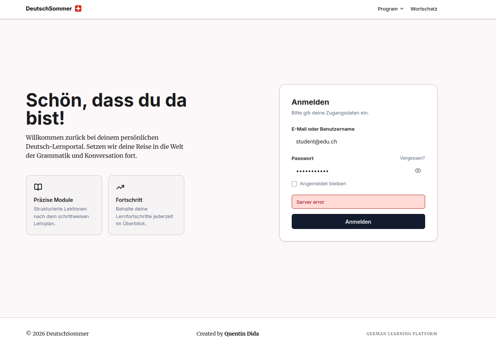
After
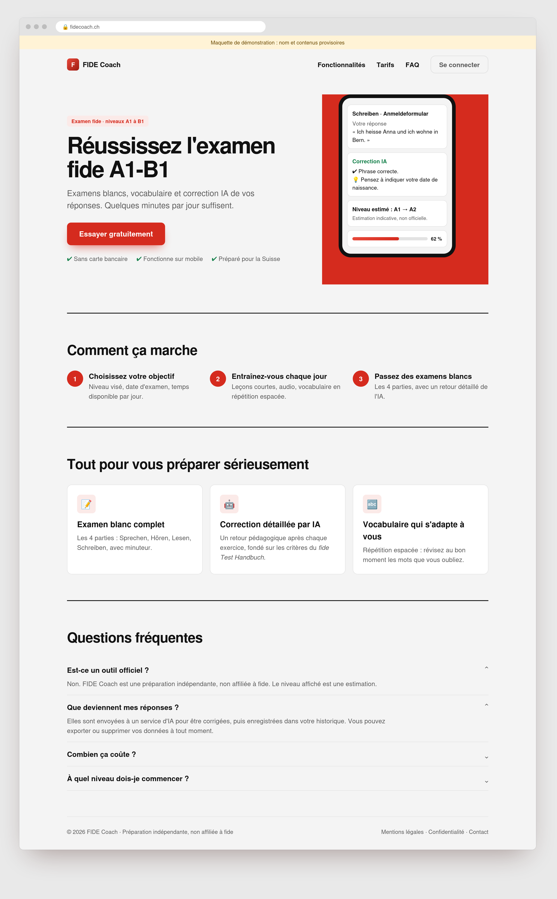
After · sign-in page
Aspect
Before
After
Role of the page
Sign-in screen doubling as public home
Two pages: a public landing page (create an account) and a simple sign-in [#6]
Headline
“Schön, dass du da bist!” + “Willkommen zurück…” (assumes an existing user)
“Pass the fide exam A1–B1” + “Mock exams, vocabulary and AI correction of your answers”
Call to action
No “create an account” link; only “Anmelden”
Primary CTA “Try it free”; “Sign in” as a secondary link in the header
Content cards
“Präzise Module”, “Fortschritt” (generic)
Three concrete benefits: full mock exam, detailed AI correction, adaptive vocabulary
Proof
None
Product mock-up with AI feedback, FAQ (“Is it official?”, “What happens to my data?”)
Error state
Red “Server error” banner in English
“The server is waking up, try again in a few seconds” + Retry button and loading state [#3]
Footer
“Created by…”, tiny grey capitals
Legal notice, privacy, contact, “not affiliated with fide” disclaimer
Mobile. Home screen: placeholder greeting and equal-weight buttons (before) → personal greeting and one clear next step (after).
Before
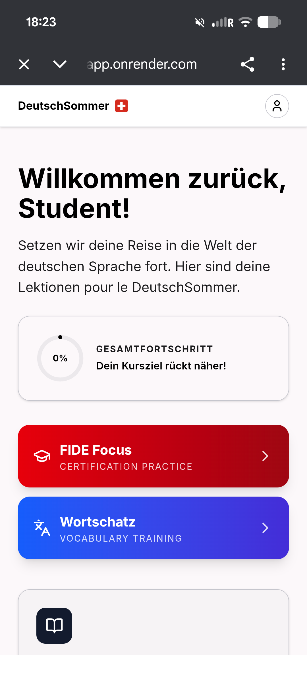
After
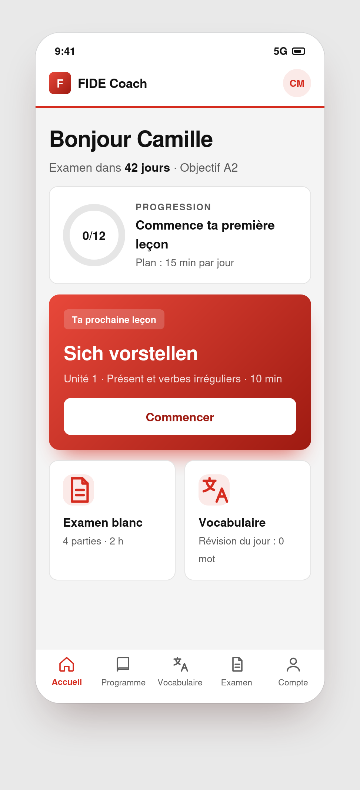
Aspect
Before
After
Greeting
“Willkommen zurück, Student!”
“Hello Camille” with exam countdown (“42 days”) [#5]
Intro sentence
“…Lektionen pour le DeutschSommer” (mixed languages)
Replaced by useful information [#2]
Progress
0% ring + “Dein Kursziel rückt näher!”
Ring with goal (0/12 lessons, target A2) + “Start your first lesson” [#5, #9]
Main action
None: two buttons of equal weight
“Your next lesson” card with duration and one Start button [#8]
Secondary entries
Red and blue gradients, English subtitles
Two quieter cards: Mock exam, Vocabulary [#8, #20]
Navigation
Profile icon only
Fixed bottom bar with five entries [#10]
Mobile. Lesson page: large image and long English instruction (before) → compact header, visible task and sticky action (after).
Before
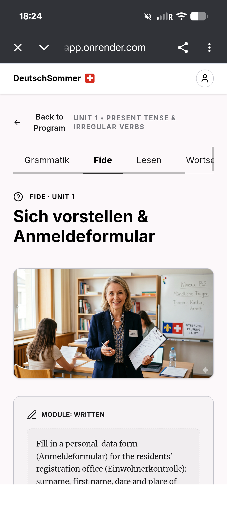
After
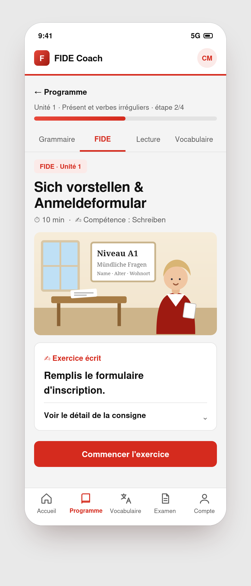
Aspect
Before
After
Back link
“Back to Program” on two lines, in English
“← Program”, one line [#2, #10]
Unit title
“UNIT 1 • PRESENT TENSE & IRREGULAR VERBS”
“Unit 1 · Present tense and irregular verbs” + step 2/4 progress bar
Tabs
“Wortsc…” cut off, scrolling not signalled
Four tabs fully visible [#10]
Image
Over a third of the screen; “Niveau B2” on a beginner unit
16:9, level-consistent, no watermark, alt text [#4, #5, #11]
Instruction
Long, in English, below the fold
Short instruction visible at once; detail in a collapsible block [#7, #11]
Duration / skill
Absent
“10 min · Schreiben”
Action
Not visible
Sticky “Start the exercise” button
Mobile. Exam history: good empty state to keep (before) → translated, lighter header and a preview of future results (after).
Before
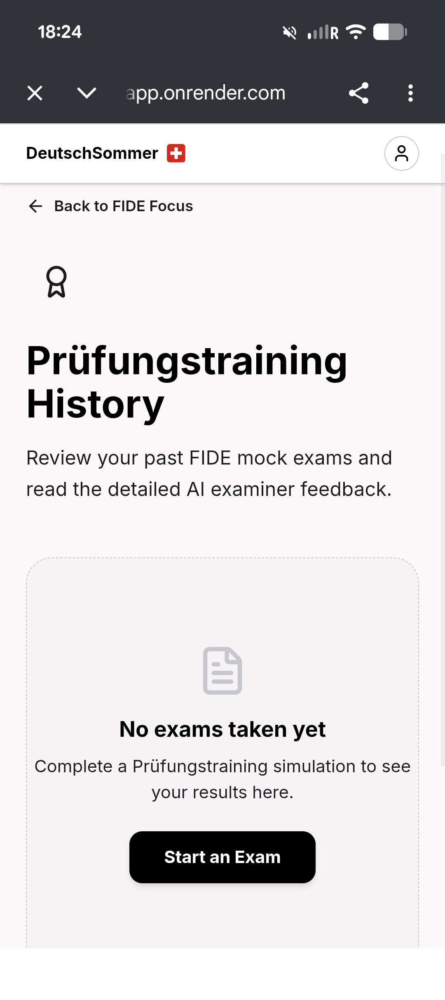
After
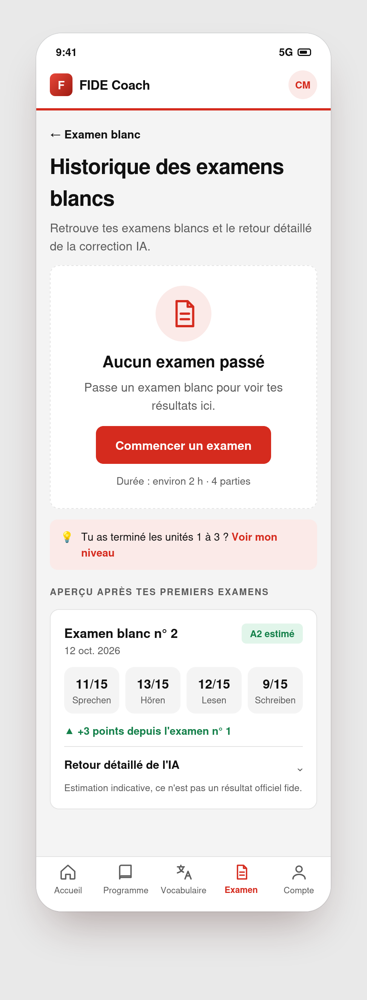
Aspect
Before
After
Title
“Prüfungstraining History” (German + English)
“Mock exam history” [#2]
Header
Large medal icon taking half the screen
Icon removed; title and empty state visible without scrolling
Empty state
Good principle: icon, “No exams taken yet”, “Start an Exam”
Kept and translated, with duration (“about 2 h”)
Prerequisite
Not mentioned
Tip: “Finished units 1 to 3? See my level”
With results
Not defined
Date, estimated level, score per part, progress between attempts, collapsible AI feedback [#16]
AI disclaimer
Absent
“Indicative estimate, not an official fide result” [#13]
Mobile. Reading page “Die Mücke”: tiny links and a tall watermarked image (before) → audio player, speakers, tap-to-translate, quiz (after).
Before
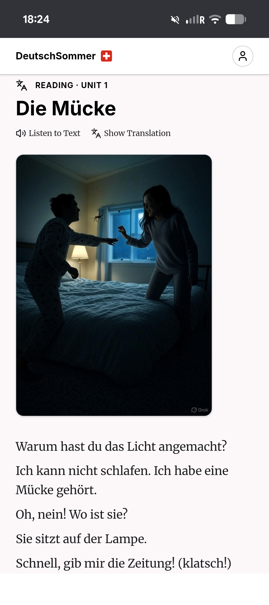
After
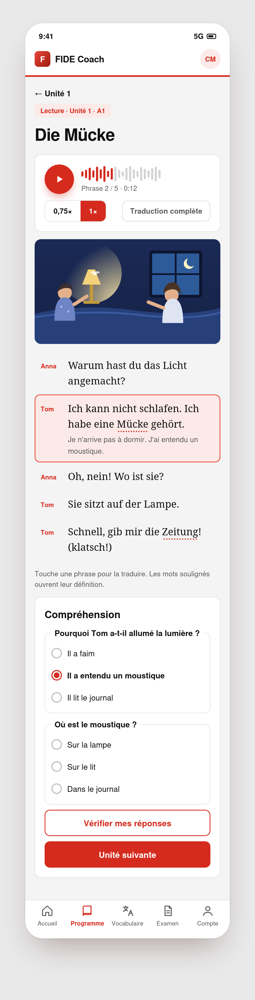
Aspect
Before
After
Audio
Small serif links “Listen to Text”, “Show Translation”
Visible player: large play button, 0.75×/1× speed, progress, highlighted sentence [#12]
Translation
One global button
Sentence by sentence on tap, plus “full translation”
Image
Full height, narrower than text, “Grok” watermark
16:9, full width, clean, alt text [#4, #11]
Dialogue
Lines without speakers
Speakers named (Anna, Tom) [#12]
Vocabulary
No clickable words
Underlined key words open a definition and “Add to my vocabulary”
End of text
Nothing
Comprehension quiz, then “Next unit”
Mobile. Account: sign-out on top and English labels (before) → grouped sections, learning goal, reminders, data controls (after).
Before
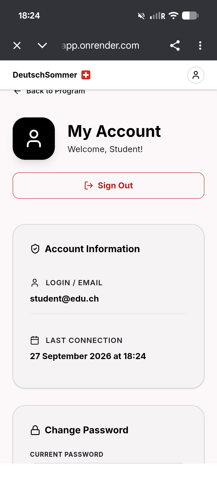
After
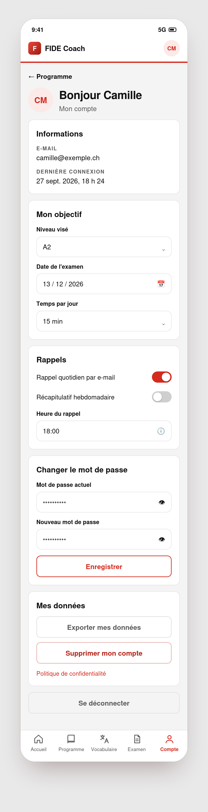
Aspect
Before
After
Header
Oversized black avatar, “Welcome, Student!”
Small avatar with initials, “Hello Camille”
Sign-out
Prominent red button at the top
Bottom of the page, secondary style, with confirmation [#17]
Information
English labels, “27 September 2026 at 18:24”
Localised labels and date format [#17]
Learning profile
Absent
Target level, exam date, daily time [#9]
Reminders
Absent
E-mail reminders, weekly recap, time of day [#14]
Data
Absent
Export my data, delete my account, privacy policy [#13, #17]
What changes across the whole product
Theme
Before
After
Language
German, English and French mixed
One interface language (French first); German only for the content to learn
Name
“DeutschSommer”
A name tied to the exam (placeholder: “FIDE Coach”)
Mobile navigation
Profile icon only
Fixed bottom bar with five entries
Main action
Two buttons of equal weight
One “next action” per screen
Images
Visible watermark, level mismatches, too tall
Cleaned, 16:9, with alternative text
Typography
Serif and sans-serif mixed on controls
Serif for reading, sans-serif for interaction
Colour
Competing red and blue gradients
One brand colour; red reserved for errors
Errors
Raw “Server error”
Human message with a Retry button
Interactive prototypes
The “after” screens exist as clickable HTML prototypes delivered alongside this document, in the folder avant-après/ (open index.html).
Reading page
Audio player with speed control and highlighted sentences, tap-to-translate, definitions on underlined words, comprehension quiz.
Sign-in
“The server is waking up” state with a Retry button and a loading state; password show/hide.
Account
Learning goal, reminders, password change, data export and deletion, sign-out with confirmation.
Suggested roadmap
Start with fixes that cost little and change the first impression, then rework positioning and the entry path, then deepen engagement using real usage data.
This week
Fix the quick wins (P0)
Proofread and unify copy, replace the raw error message, remove the image watermark and align visuals and messages with the learner’s level and state (#2 to #5).
Weeks 2 to 4
Reposition and simplify the entry (P1)
Choose the name (#1), build the public landing page (#6), settle the interface language (#7) and put one “next lesson” action on the home screen (#8).
Next
Onboarding, navigation and trust (P1)
Onboarding with goal and exam date (#9), bottom navigation and tabs (#10), lighter images (#11), audio player (#12) and transparency on AI correction (#13).
Then
Measure, then evolve (P2)
Set up analytics and tests (#22), then prioritise retention, dashboard, accessibility and identity work (#14 to #21) from what the data shows.
How to measure success
Acquisition
Visitor-to-sign-up rate on the landing page
Bounce rate
Activation
Share of new users who finish the first lesson
Share who start a mock exam
Sign-in error rate
Retention
Return rate at 7 and 30 days
Lessons completed per week
Limits and points to verify
Assumptions made
The target audience is mainly French-speaking learners in Switzerland. An English version could be useful for an international audience
The sign-in error may come from a sleeping free-tier server. This is a hypothesis.
“After” texts are proposals in French; they are not final copy. It could be decided to translate the whole app into English
To check before acting
Legal: use of the Swiss cross in the identity; the licence of AI-generated images; privacy policy (Swiss nFADP and GDPR) given that answers are sent to AI services.
Naming: domain and trademark availability, and wording that does not imply affiliation with fide.
Accessibility: contrast and touch-target values should be measured on the real app.
Unseen screens: vocabulary, grammar and the running exam still need review.
Next steps
1. Validate
Review the priorities and the name shortlist, and confirm the target audience and languages.
2. Implement the P0 fixes
Roughly a week of work, with an immediate effect on credibility.
3. Build and test
Turn the prototypes into production screens, add analytics, and test with five real fide candidates.